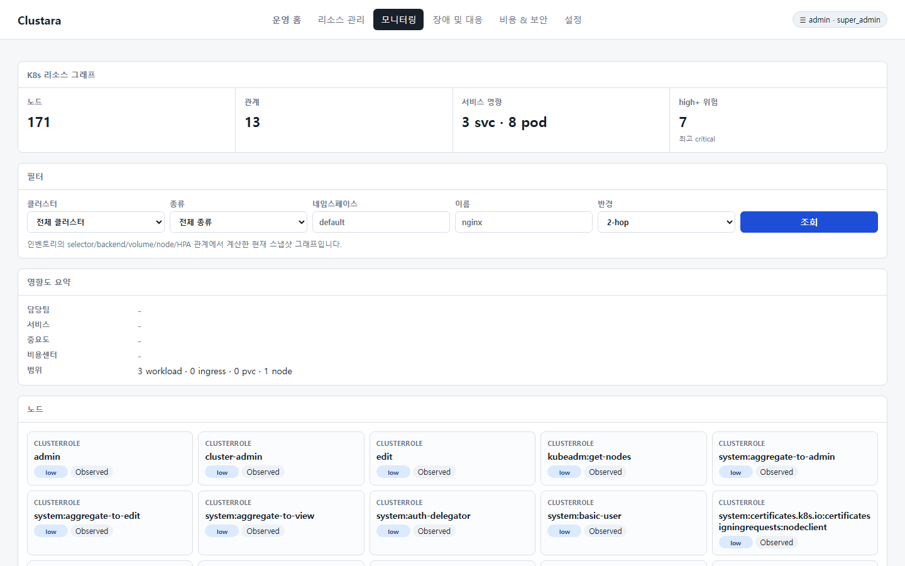
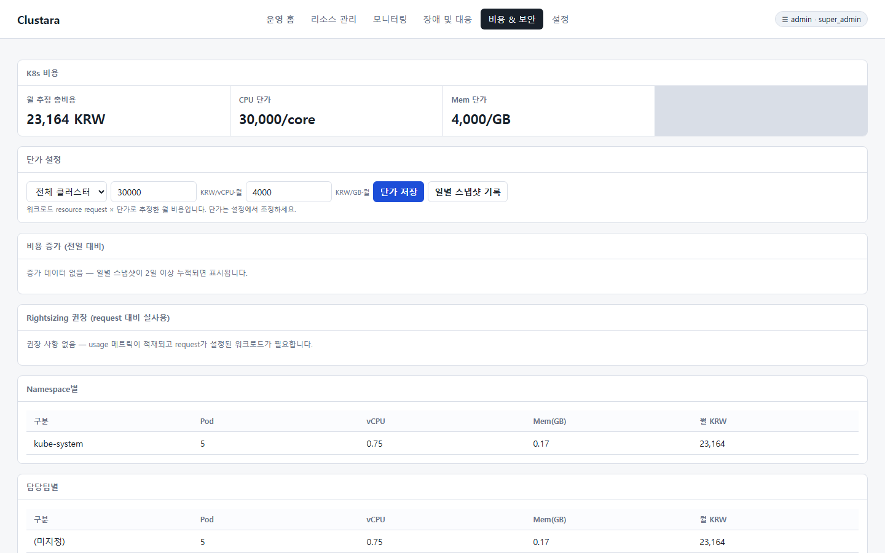
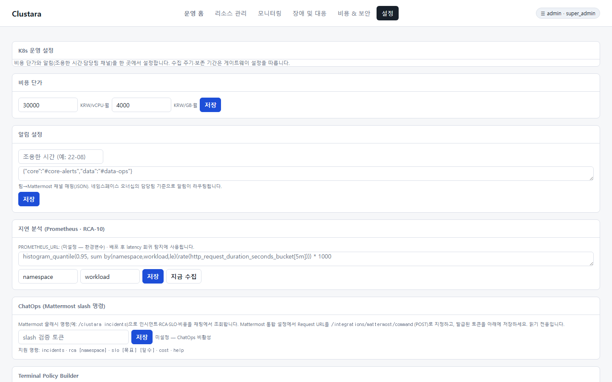
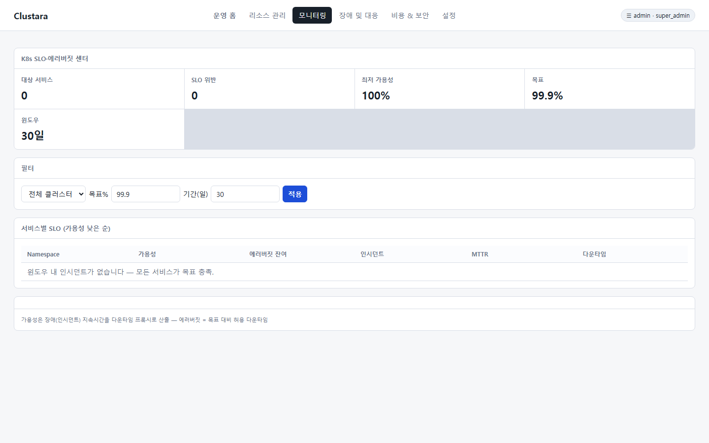

기업의 핵심 서비스들이 마이크로서비스 아키텍처(MSA)와 Kubernetes 기반으로 전환됨에 따라, 인프라의 복잡성은 기하급수적으로 증가하고 있습니다. 다중 클러스터(Multi-Cluster) 및 멀티 테넌시 환경에서 발생한 장애는 원인 분석이 어렵고 전파 범위(Blast Radius)를 즉각 파악하기 힘들어 비즈니스 영속성에 심각한 위협이 되고 있습니다.
또한, 개발팀 중심의 자원 할당으로 인해 실제 사용량 대비 과도한 자원이 요청(Over-provisioning)되어 인프라 비용이 낭비되는 비효율성이 상존하고 있습니다. 이에 따라 장애 관제 통합, 정밀한 자원 Rightsizing(FinOps), 그리고 비즈니스 신뢰성(SLO) 지표의 중앙 통제가 가능한 고도화된 통합 플랫폼 도입이 시급히 요구됩니다.
• 장애 인지 및 해결 지연 (MTTR 장기화): 인프라-워크로드 간 의존성 파악 지연으로 인한 서비스 장애 지속.
• 인프라 비용의 지속적 상승: 실제 사용량 메트릭과 무관하게 설정된 리소스 Request 값으로 인한 유휴 자원 방치.
• 보안 및 거버넌스 부재: 운영망 환경에서의 무단 명령어 실행(rm, dd 등) 제어 및 변경 이력 추적(Audit) 불가.
Clustara는 Kubernetes 운영망의 자가 진단 및 자율 제어를 구현하는 비즈니스 지향형 운영 통제 플랫폼입니다. 인클러스터 수집 에이전트와 지능형 게이트웨이의 결합을 통해 실시간 메트릭, K8s 이벤트, 소스 변경 리비전을 결합 분석하여 단순 모니터링을 넘어선 '행동 가능한 통찰(Actionable Insight)'을 제공합니다.
Clustara는 장애 발생 시 시스템 관리자가 여러 모니터링 도구를 헤매지 않고, 단일 화면에서 장애 탐지 근거, 이벤트, 그리고 연관 리소스 구조를 파악하도록 돕습니다.

특히, **장애 워룸(Incident Workspace)**과 **리소스 그래프(Resource Graph)**는 서비스 의존성을 토폴로지로 시각화하여 특정 Pod의 장애가 상위 서비스 트래픽에 미치는 영향 범위(Blast Radius)를 즉각 보여줌으로써 의사결정 속도를 획기적으로 향상시킵니다.

개발 환경 및 운영 환경의 모든 워크로드에 대해 실제 사용률 메트릭을 추적하여 과다 할당된 CPU/메모리 자원을 식별합니다. 사용량의 1.3배수 수준을 적정 스펙(Request)으로 권장하며, 이를 반영할 경우 절감되는 월 추정 비용을 한화(KRW)로 산출하여 경영진에게 구체적인 재무 가치를 제시합니다.

운영망 Pod에 직접 접속하여 작업을 수행하는 위험을 최소화하기 위해 **Terminal Policy Builder**를 제공합니다. 역할별 접근 권한 설정, `rm -rf`, `dd` 등 내장 차단 규칙 강제, 관리자 승인 절차를 연계하여 무단 명령 실행을 원천 차단하며, 승인된 세션의 상세 명령 내역 및 마스킹된 출력 결과를 감사 증적으로 완벽히 보관합니다.

시스템 가동률(Uptime) 수준의 단순 지표를 벗어나, 고객이 체감하는 서비스 가용성을 관리합니다. 서비스 단위의 가용성 목표(예: 99.9%)를 설정하고, 장애 인시던트 발생에 따른 다운타임을 집계하여 잔여 에러 버짓(Error Budget) 비율을 가시화함으로써 비즈니스의 안정적 릴리즈 시점을 정량적으로 조율할 수 있습니다.

Clustara 플랫폼 도입을 통해 달성할 수 있는 정량적/정성적 효과는 다음과 같습니다.
| 구분 | 도입 전 | 도입 후 (Clustara 적용) | 기대 효과 |
|---|---|---|---|
| 장애 복구 시간 (MTTR) | 평균 120분 (로그 검색, YAML 수동 대조 등) | 평균 15분 내외 (RCA 자동 진단 및 Golden Pod Diff 제공) | 장애 다운타임 87% 감소 |
| 클라우드 리소스 비용 | 자원 과다 할당으로 유휴 CPU/메모리 비용 방치 | Rightsizing 가이드를 통한 주기적 스펙 다운사이징 적용 | 인프라 비용 최소 25% 절감 |
| 운영 보안 및 가시성 | 접속 이력 불분명 및 위험 명령 통제 불가 | 터미널 실행 제어, 승인 프로세스 및 감사 증적 보관 | 내부 컴플라이언스 100% 충족 |
Clustara는 단순한 모니터링 시스템이 아닌, 인프라의 안정성 확보, IT 비용 절감, 그리고 내부 통제 강화를 통합 달성하는 핵심 플랫폼입니다. 본 플랫폼의 성공적인 안착을 기반으로 향후 인공지능(LLM) 기반의 장애 자율 분석 기능을 고도화하고, 멀티 클라우드 환경으로의 통합 비용 정산 확장을 추진하여 엔터프라이즈 하이브리드 클라우드 운영의 표준 모델로 발전시켜 나갈 것입니다.